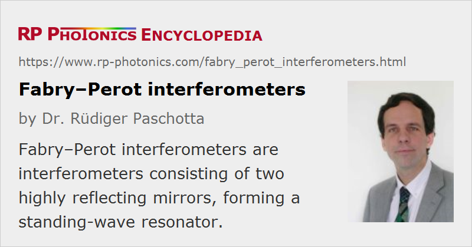

Fabry–Pérot Interferometers
Definition: interferometers consisting of two highly reflecting mirrors, forming a standing-wave resonator
More general terms: interferometers, optical resonators
German: Fabry-Pérot-Interferometer
How to cite the article; suggest additional literature
Author: Dr. Rüdiger Paschotta
A Fabry–Pérot interferometer (also called Fabry–Pérot resonator) is a linear optical resonator (or cavity) which consists of two highly reflecting mirrors (with some small transmissivity) and is often used as a high-resolution optical spectrometer. One exploits the fact that the transmission through such a resonator exhibits sharp resonances and is very small between those.
The spelling Fabry–Perot (without accent) is also frequently seen. Alfred Perot spelled his name with the accent, but the French civil register didn't.
Operation Principle
The following explanations, assuming a lossless symmetric high-finesse Fabry–Pérot, help to understand its operation principles:
- A substantial circulating optical power in the resonator is possible only if the input wave has an optical frequency close to one of the resonance frequencies of the resonator.
- In resonance, the contribution of the input wave leaking through the input mirror adds constructively to the circulating wave. And, there is destructive interference for the reflected field: the input field reflected at the input mirror is canceled by the field leaking out of the resonator. Therefore, there is effectively no reflection in resonance.
- In anti-resonance, the circulating field is quite weak, and most radiation is reflected at the input mirror. The weak field leaking out of the resonator towards the input source adds constructively to the reflected field.
Figure 1 shows the frequency-dependent transmittance in an example case:
The resonance frequencies can often be tuned by changing the cavity length (mirror distance) with a piezo actuator. When the voltage applied to the piezo is periodically varied, e.g. with a triangular temporal shape, and the transmitted power versus time is monitored with a photodetector and an oscilloscope, the latter can directly display the optical spectrum of the incident light, provided that the spectral width is smaller than the free spectral range and the scan is slow enough to reach a quasi-stationary state of the resonator.
The following animated diagrams show how the reflected and transmitted complex amplitudes involve when the residence condition is tuned.
Variants
Strictly, a Fabry–Pérot interferometer by definition consists of two planar mirrors, but the term is frequently also used for resonators with curved mirrors. From a theoretical viewpoint, plane–plane optical resonators are special in the sense that their resonator modes extend up to the edges of the mirrors and experience some diffraction losses. However, Fabry–Pérot interferometers are usually used with input beams of much smaller diameter, which are actually not really matched to the resonator modes. For the usually small mirror spacings, where diffraction within a round trip is weak, this deviation is not very important.

Normally, Fabry–Pérot interferometers are devices with free-space light propagation between the mirrors. However, the term is sometimes also used for devices containing in a waveguide. For example, Fabry–Pérot lasers are laser diodes containing an active (amplifying) waveguide with some kind of mirrors at the ends.
Applications
A typical application of a Fabry–Pérot interferometer is to check whether a laser operates on a single resonator mode or on multiple modes. High-finesse Fabry–Pérot interferometers are also used as reference cavities and for spectral analysis.
For optical spectrum analysis, the Fabry–Pérot interferometer is often made short enough to achieve a sufficiently large free spectral range; the bandwidth of the resonances is then the free spectral range divided by the finesse. Due to the high reflectivities, the finesse can be high (well above 1000, and with supermirrors even much higher). For a given finesse, the wavelength resolution can be improved by increasing the mirror distance, but only at the cost of reducing the free spectral range, i.e., the range within which unique spectral assignment is possible.
A variant of the Fabry–Pérot interferometer is the Gires–Tournois interferometer. This is used not for spectral analysis, but for generating chromatic dispersion.
Suppliers
The RP Photonics Buyer's Guide contains 18 suppliers for Fabry--Perot interferometers. Among them:
Questions and Comments from Users
Here you can submit questions and comments. As far as they get accepted by the author, they will appear above this paragraph together with the author’s answer. The author will decide on acceptance based on certain criteria. Essentially, the issue must be of sufficiently broad interest.
Please do not enter personal data here; we would otherwise delete it soon. (See also our privacy declaration.) If you wish to receive personal feedback or consultancy from the author, please contact him e.g. via e-mail.
By submitting the information, you give your consent to the potential publication of your inputs on our website according to our rules. (If you later retract your consent, we will delete those inputs.) As your inputs are first reviewed by the author, they may be published with some delay.
Bibliography
| [1] | C. Fabry and A. Pérot, “Théorie et applications d’une nouvelle méthode de spectroscopie interférentielle”, Ann. de Chim. et de Phys. 16 (7), 115 (1899) |
| [2] | J. Stone and D. Marcuse, “Ultrahigh finesse fiber Fabry–Pérot interferometers”, J. Lightwave Technol. 4 (4), 382 (1986), doi:10.1109/JLT.1986.1074739 |
| [3] | N. Ismail et al., “Fabry-Pérot resonator: spectral line shapes, generic and related Airy distributions, linewidths, finesses, and performance at low or frequency dependent reflectivity”, Opt. Express 24 (15), 16366 (2016), doi:10.1364/OE.24.016366 |
| [4] | A. E. Siegman, Lasers, University Science Books, Mill Valley, CA (1986) |
| [5] | J. M. Vaughan, The Fabry-Pérot Interferometer: History, Theory, Practice and Applications, CRC Press (1989) |
| [6] | R. Paschotta, Photonics Spotlight article: The resonator mystery |
See also: standing-wave resonators, interferometers, spectrometers, etalons, Gires–Tournois interferometers, supermirrors, optical resonators, resonator modes, mode matching, reference cavities, free spectral range, finesse
and other articles in the category optical resonators
|  |
If you like this page, please share the link with your friends and colleagues, e.g. via social media:
These sharing buttons are implemented in a privacy-friendly way!